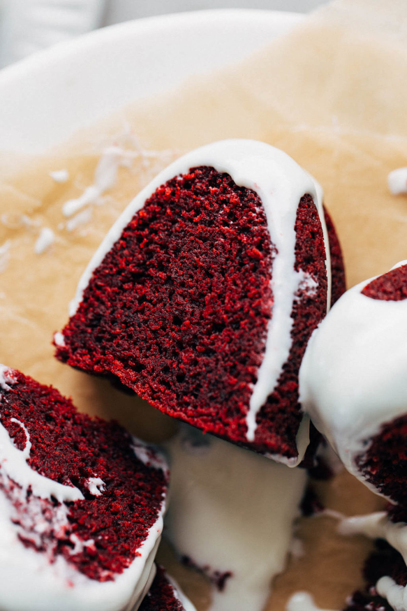
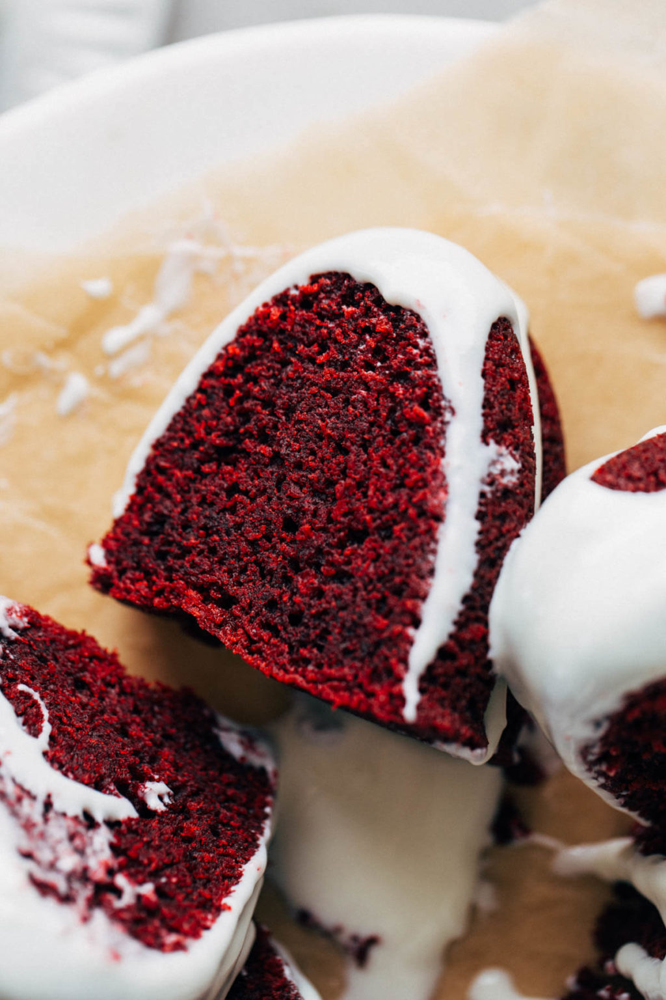
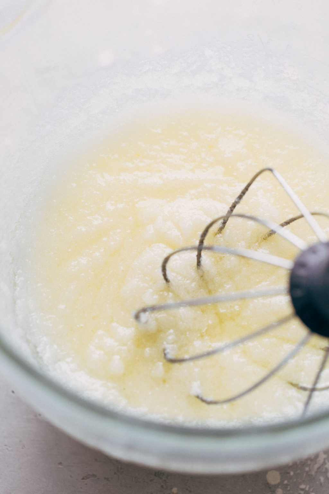
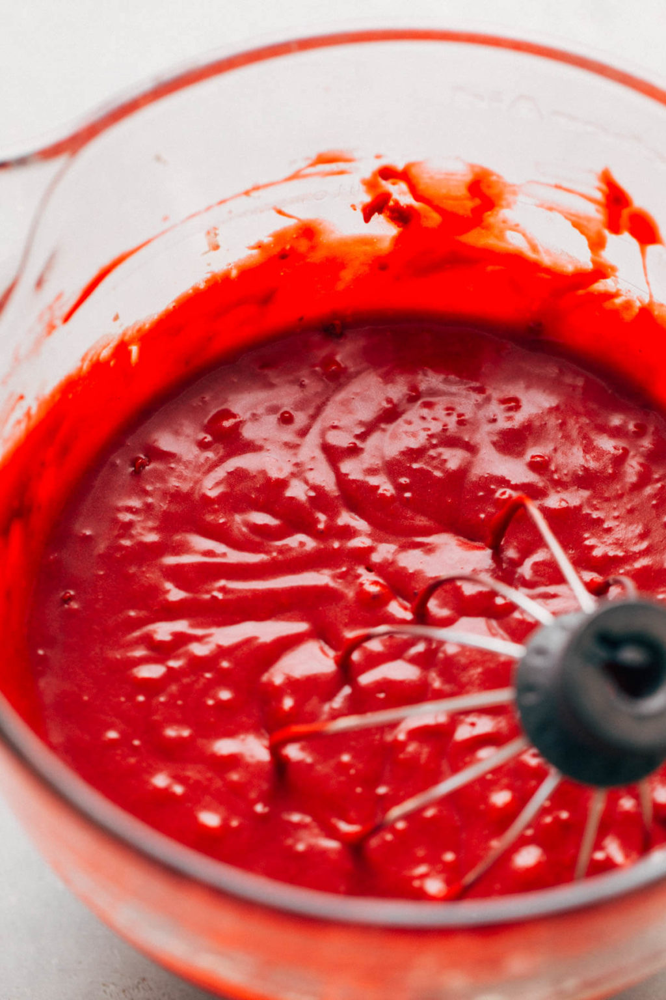
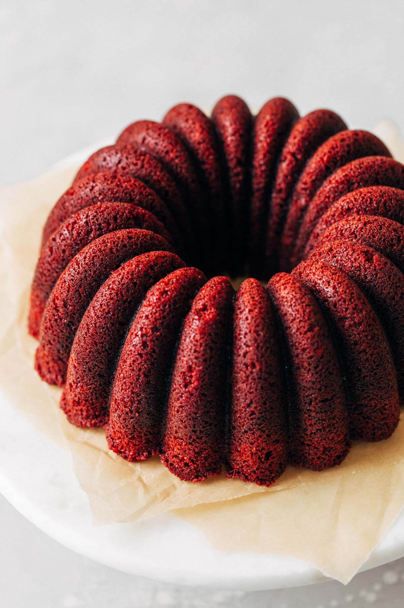
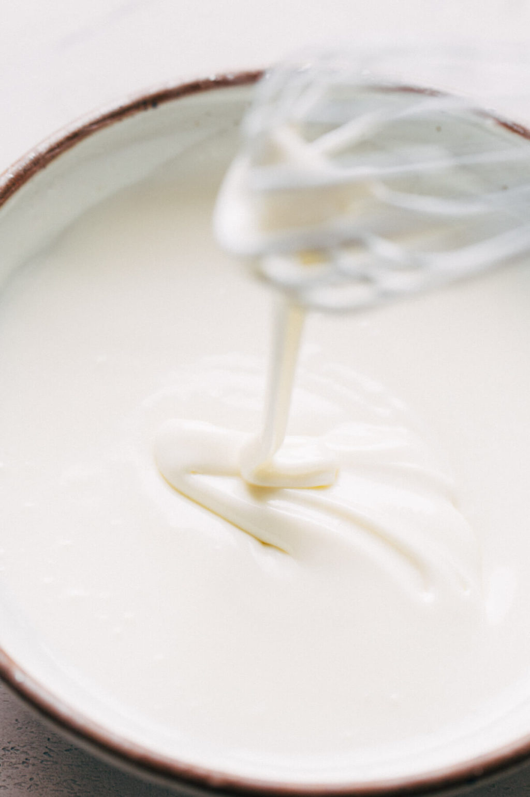
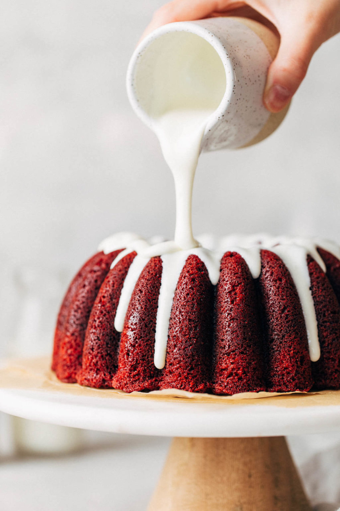
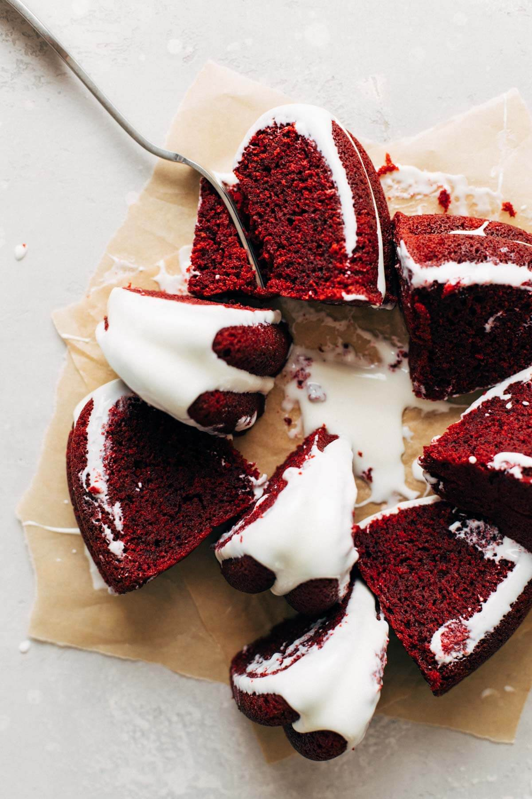

January 25, 2021 / By Jenna
This red velvet bundt cake is so moist and effortless, but looks and tastes so amazing! The texture is rich and tender, the flavor has that signature hint of chocolate, and the color is the perfect shade of deep red velvet. The cake is delicious on its own, but I’ve enhanced this recipe by adding a silky cream cheese icing on top. You just can’t go wrong with red velvet and cream cheese!
 

You can never quite put your finger on it. It’s a red cake that doesn’t quite taste like chocolate or vanilla and sometimes feels like it’s just a carrier from cream cheese toppings. I’m not even sure anyone can describe the exact flavor of it!
Historically, it was invented in the Victorian era. It was named a “velvet” cake because of its creamy and dense chocolate cake-like texture.
To achieve this texture, buttermilk and vinegar are two very common ingredients in red velvet cake. Once added to the batter, the two activate the baking soda to create a fluffy but “velvety” texture. And when the cake was first created, the cocoa powder used wasn’t alkalized, so it would give the cake a reddish hue when combined with these ingredients.
So with the hint of cocoa and acidity, you’re left with a slightly chocolatey, tangy, and silky red cake. While no one can pinpoint the exact origin of red velvet cake, we’re all in agreement that it’s a REALLY good cake that just never fails.
  I know, I said it…moist. But this really is a super moist red velvet bundt cake OK! It took me four tests to get the recipe just right so you know it’s worth the “m” word.
Most cake recipes either use all butter or all oil. When I first made this recipe, I just used oil and boy did I get one oily cake. You would push your finger into it and you would be left with a pool of oil. No thank you.
The reason this is a super moist red velvet cake is because of the balance between the oil and the butter. Adding oil to a recipe helps it stay moist for a longer period of time. This is because, as opposed to butter, it lacks water so it won’t evaporate and dry out your cake.
But, using all oil can be messy and create a strange flavor…even with a mild oil like vegetable or canola. The butter helps to bring the flavor back down while also giving the cake a little bit more structure once cooled.
Of course, it wouldn’t be a red velvet cake without buttermilk and vinegar. Like I just mentioned, the two in conjunction with baking soda help to give this fluffy but silky texture to your cake. Mix that with the perfect balance of fats and you have the best red velvet cake recipe ever!
 To get that signature red velvet color, 2 tablespoons of red food dye are added to the batter. For red velvet cakes, I choose to use a liquid red food dye that you can find in just about any grocery store. It easily blends into the batter without creating an overly vibrant red color.
I would stay away from using gel food coloring as it has a much stronger opacity than liquid food color. It’s very easy to go overboard with the red color when using gel. Although in any other case, I choose to use gel when I only need a few drops to color things such as cookies or frosting.
The icing on top is absolute perfection. It’s creamy, silky, tangy, and the perfect pairing to the moist and rich red velvet cake. Here are a few things to keep in mind when making the glaze:
I’ve had so much trouble with this intricate bundt cake pan, especially with really moist and sweet cakes. But through some trial and error, I’ve found a few solutions that give me the perfect release every time.
Option 1: Right before you’re about to pour the batter into the pan, prep it with a nonstick oil and flour spray. My favorite is Baker’s Joy. But the key here is to spray in short strokes, careful not to let the oil pool in the bottom of the pan. Once you have a light coating, use a fine pastry brush to brush the oil all around the pan, getting every nook and cranny. Then pour in the batter and bake.
When it’s fresh from the oven, set a timer for 10 minutes. This time is the sweet spot because it allows the cake to cool just enough to where it won’t fall apart, but it’s also when the sugars are still fluid and liquid. If you let the cake cool too long, those sugars will harden and your cake will stick to the pan. But after those 10 minutes, the cake should pop right out.
Option 2: Again, prep the pan right before you pour in the batter. But this time, generously grease the pan with oat and then coat it in granulated sugar. The sugar acts as a barrier between the cake and the pan, and it also adds a sweet little crunch to the outside of the cake.
Once baked, let your cake cool for that 10 minute sweet spot. The key is to turn it out while it’s still a little warm. Otherwise, if you let it cool completely, the sugar will harden and then your cake is really stuck.
Your cake should pop right out. No wiggling needed. So if you’ve ever really struggled with your cakes sticking, try this trick!

Welcome to Butternut Bakery! I’m here to satisfy your insatiable sweet tooth and help perfect your baking skills. There are desserts here for everyone, whether you’re gluten free, vegan, or love your butter and flour. Either way, you’re sure to find your new favorite dessert recipe.
Read more about Jenna Barnard